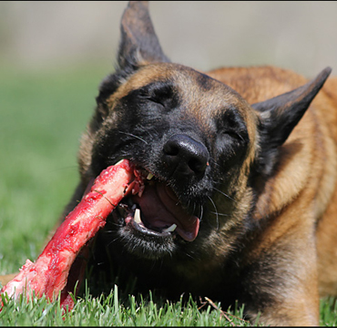
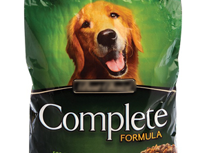

Dieta primitiva 
|
Termenul dietă primitiva este folosit pentru a identifica hrana pe care strămoșii câinilor noștri ar fi mâncat-o, in timp ce bio-adecvat, este unul dintre cei mai populati termeni de marketing din industria hranii pentru animale pe care companiile ii folosesc.
Ideea de a mânca hrana pe care strămoșii tai au mâncat-o și că organismul este prin urmare evoluat pentru a digera și de a utiliza-o, nu este nimic nou și a fost mult timp acceptat pe scară largă ca cel mai sănătos mod pentru noi oamenii să mănâncam. Cu toate acestea, ea a trecut recent la industria alimentară pentru animale de companie și a dus la o revoluție în formularea produsului și marketingului.
Pentru majoritatea producătorilor și proprietarilor de câini, atunci când vorbesc despre dieta primitiva(ancestrala), strămoșii în cauză sunt lupii gri, înainte de domesticirea lor acum 20-30.000 de ani.Aceasta înseamnă că majoritatea alimentelor etichetate ca "ancestrale" sunt foarte bogate în carne și foarte scăzute sau fără boabe și ar trebui să fie ușor prelucrate dacă nu sunt crude.
Există cu toate acestea o dezbatere tot mai mare cu privire la cât de mult câini moderni au evoluat de la domesticirea lor și prin urmare, cât de potrivita această versiune a dietei primitive este:
Câinii au petrecut cel puțin 10.000 de generații de viață mănâncand cu oamenii. Cu timpul ar fi inclus mult mai puțină carne și ar fi introdus câinele la cereale și alimente gatite.
Deși există o mulțime de dovezi pentru a sprijinii dieta primitiva, nu există încă nici o dovadă definitivă ca ar fi cu adevărat cel mai benefic pentru toti câinii în general. Vestea bună este totuși că din experiența noastră deoarece ambele abordări gravitează în jurul hrănirii alimentelor bune, naturale, întregi și exclude toate ingredientele problematice (grâu, săruri adăugate și zaharuri, aditivi chimici, etc), ambele funcționează de obicei extrem de bine chiar și pentru același câine deci nu este de ales dintre una sau alta.
Din păcate pe tot mai multe ambalaje gasiti termenul "bio-adecvat" sau "dieta ancestrala" fara ca ascestea sa fie reale, asa ca asigurați-vă să verificați din nou lista de ingrediente înainte de achizitionarea produsului.
|
Bio-adecvat
|
Bio-adecvat este unul dintre cuvintele populare folosite in industria alimentară pentru animale de companie. Se folosește pentru a clasifica alimentele sau ingredientele adecvate animalului, adică alimentele pe care animalul le adaptează în mod evolutiv pentru a le consuma, digera și utiliza. Pentru majoritatea nutriționiștilor canini, aceasta înseamnă compararea alimentelor cu dieta lupului, deoarece lupii sunt cele mai apropiate rude sălbatice ale câinilor domestici. Cu cât o mâncare este mai aproape de cea mâncată de un lup, cu atât este mai bio-adecvată și prin urmare, cu atât este mai bună.
Un aliment tipic bio-adecvat ar avea un conținut ridicat de carne (de obicei 50-80%), ar conține o varietate de legume, fructe și ierburi și ar fi complet fără cereale. Ingredientele relativ moderne cum ar fi soia, lactatele și desigur aditivii artificiali sunt strict evitate. Mulți susținători bio-adecvați respectă de asemenea puternic principiile de hrănire brută.
Trebuie remarcat faptul că nu toți nutriționiștii canini ar defini bio-adecvat în acest fel. Principiile de mai sus se bazează pe teoria că câinii sunt neschimbiți din punct de vedere fiziologic față de strămoșii lor lupii, dar unii nutriționiști consideră că cei 30.000 de ani de domesticire au lăsat câinii moderni mult mai puțin dependenți de carne digerand boabele mult mai bine decât stramosii lor sălbatici.
|
Complet
|
Legislația UE definește un aliment complet pentru animale de companie ca „orice aliment care, din cauza compoziției sale, este suficient pentru o rație zilnică” și definește o rație zilnică ca „Cantitatea totală medie a unui anumit aliment pentru animale de companie care este necesară zilnic de un animal de companie o anumită specie, categorie de vârstă și stil de viață sau activitate pentru a-și satisface toate cerințele de energie și nutrienți ".
Teoretic, acest lucru înseamnă că poți fi sigur că orice mâncare pe care o găsești etichetată ca „completă” are tot ce are nevoie câinele tău pentru a rămâne în formă și sănătos. Deoarece majoritatea producătorilor recomandă să iti hranesti cainele numai cu produsele lor, principiul „completitudinii” dietetice este absolut esențial pentru sănătatea animalelor de companie și totuși tocmai această premisă atrage din ce în ce mai multe critici din anumite părți ale comunității de animale de companie.
Principala critică se bazează pe necesitățile de nutrienți recomandate. În Europa liniile directoare nutriționale sunt stabilite de Federația Europeană a Industriei pentru Hrana pentru Animale de companie (FEDIAF), care este o altă sarcină de a reprezenta interesele producătorilor europeni de hrană pentru animale de companie. Nivelurile lor nutriționale recomandate se bazează pe „studii științifice (inclusiv NRC 2006) și date nepublicate din industrie”. Investigațiile Asociației pentru Adevărul în Hrana pentru Animale de companie arată că Consiliul Național de Cercetare din SUA (NRC) are legături extrem de puternice cu aproape toate marile corporații de hrană pentru animale ceea ce înseamnă că industria hranii pentru animalele de companie își stabilește propriile reguli.
De exemplu, ar putea fi pur și simplu o coincidență faptul că nivelul de proteine recomandat de FEDIAF pentru câinii adulți cu 18% substanță uscată se întâmplă să fie în concordanță cu dietele cu conținut scăzut de carne și conținut ridicat de carbohidrați pe care cei mai mari membri ai lor le produc?
Apoi este problema calității nutrienților. Acum devine din ce în ce mai clar că sursa și gradul de ingrediente și substanțele nutritive pe care le conțin (proteine din carne proaspătă vs proteine de derivați vegetali) sunt absolut esențiale pentru evaluarea calității alimentelor și totuși nivelurile de nutrienți recomandate pentru alimentele complete nici măcar nu sunt abordați. Din nou, acest lucru se joacă direct în mâinile producătorilor de alimente de calitate inferioară pentru animale de companie.
În plus nivelurile minime de vitamine și minerale FEDIAF necesită practic utilizarea unui premix sintetic multivitaminic și mineral. Aceste pulberi albe sunt practic echivalentul tabletelor multivitaminice luate de oameni și sunt adăugate la aproape toate alimentele complete pentru animale de companie la scară globală. Nu sunt în sine un lucru rău, dar fac mult mai ușor pentru companii să utilizeze ingrediente sub standard, deficiente din punct de vedere nutrițional știind că premixul le va atinge nivelurile minime indiferent. Ele sunt de asemenea sintetice (adică nu naturale), ceea ce a determinat unele mărci mai naturale și în special producătorii de materii prime să le omită din alimentele lor în favoarea concentrării asupra nutrienților naturali conținuți în materiile prime. Prin lege aceste alimente nu ar trebui numite „complete” (deși unii producători încă folosesc termenul).
Pentru noi proprietarii de animale de companie acest lucru creează sarcina imposibilă de a alege între alimentele care sunt certificate din punct de vedere nutrițional în conformitate cu o schemă foarte defectuoasă și care nu sunt în întregime naturale SAU alimente complet naturale care singure probabil nu oferă tot ce are nevoie un câine.
Pe scurt actualele linii directoare alimentare complete sunt o mizerie totală și au nevoie disperată de o revizuire completă și imparțială ... dar acum sunt tot ceea ce avem. Fie că alegeți să mergeți sau nu cu o mâncare compatibilă cu FEDIAF depinde de dvs., există exemple bune și rele ale ambelor. Sfatul nostru ca întotdeauna este să căutați un aliment cu un nivel nutritiv ridicat care să se potrivească câinelui dvs. și să rezolvați eventualele deficiențe nutriționale amestecând pur și simplu lucrurile din când în când. Amestecarea sau alternarea a două sau mai multe mâncăruri de înaltă calitate pentru câini este întotdeauna o idee bună, precum și consolidarea dietei cu suplimente sănătoase precum legume, fructe și carne.
|
Grad uman
|
„Grad uman” este un alt termen care este folosit acum în toată industria alimentelor pentru animale de companie. Primul lucru de remarcat este că nici o hrană produsă într-o fabrică de hrană pentru animale de companie, oricât de bună ar fi, nu poate fi clasificată legal ca fiind de calitate umană. Din acest motiv, majoritatea afirmațiilor se limitează la ingredientele cu expresii precum „fabricate din ingrediente de calitate umană”, „cu carne de calitate umană” sau „ingrediente potrivite pentru consumul uman” devenind din ce în ce mai populare.
Reglementările care reglementează ceea ce animalele pot și nu pot fi hrănite sunt relativ stricte in UE, ceea ce înseamnă că marea majoritate a ingredientelor pentru hrana animalelor de companie provin din surse de calitate umană. De exemplu spre deosebire de SUA unde animalele moarte, pe moarte, cu handicap și bolnave pot fi folosite în hrana pentru animale de companie, in UE toate materialele animale din hrana animalelor de companie trebuie să provină de la animale transmise ca fiind potrivite pentru consumul uman.
Problema este că multe ingrediente care încep ca „de calitate umană” nu mai sunt clasificate drept potrivite pentru consumul uman odată ce au fost procesate. De exemplu, deși o bucată de carne poate proveni de la un animal de calitate umană, odată ce a fost transformată în făină de carne, aceasta nu mai este clasificată ca fiind potrivită pentru consumul uman. Cu toate acestea, un aliment care conține făină de carne poate spune în continuare în mod legal că carnea provine din „surse de calitate umană”, chiar dacă ingredientul din carne în sine nu este de calitate umană.
Intrucât practic orice hrană pentru animale de companie poate spune că are „ingrediente de calitate umană” și deoarece niciunul (despre care știu eu) nu este de calitate umană la sfârșitul procesării, orice afirmație cu privire la calitatea umană a unui aliment ar trebui să fie nesocotit.
|
Hipoalergenic
|
Hipoalergenic, înseamnă literalmente cauzatoare de alergie scăzută și poate fi folosit pentru a descrie orice aliment care nu conține ingrediente care sunt în mod obișnuit legate de alergii. Din păcate, diferiți producători au idei diferite despre ceea ce constituie un ingredient cauzator de alergii, astfel încât definiția poate varia de la o marcă la alta. Porumbul de exemplu, este considerat ca un ingredient hipoalergenic de către unii producători, în timp ce alții îl evită total.
Pentru a primi semnul de hipoalergenic, un aliment trebuie să fie lipsit de grâu, porumb, produse lactate, produse din soia și aditivi artificiali.
|
Perioada din viata
|
O dietă „Perioada din viata (Life-stage)” este concepută pentru a satisface cerințele nutriționale ale câinilor dintr-o anumită grupă de vârstă sau în timpul unei stări fiziologice specifice, cum ar fi sarcina. Pentru majoritatea companiilor acest lucru înseamnă furnizarea de alimente pentru pui, hrană pentru adulți și hrană pentru seniori, dar unii producători o duc mult mai departe cu opțiuni pentru înțărcare, juniori, alăptare, câini în vârstă și tot felul de alte etape ale vieții. Unele mărci pe de altă parte oferă o singură mâncare „pe tot parcursul vieții” pentru a fi folosită chiar de la înțărcare până la bătrânețe.
In sălbăticie, foarte puține animale consumă alimente diferite în tinerețe sau bătrânețe. Desigur, ei pot mânca mai mult sau mai puțin din același aliment, dar, în general, hrănirea în stadiul de viață este un concept destul de artificial.
Cu toate acestea, hrănirea pe durata vieții permite producătorilor să-și specializeze alimentele pentru a ajuta câinii în diferite momente ale vieții lor. De exemplu, majoritatea alimentelor pentru pui includ niveluri mai ridicate de proteine și calciu pentru a ajuta la creștere, în timp ce alimentele pentru vârstnici conțin adesea mai puține calorii, precum și suplimente de sănătate specifice, în special pentru articulații.
Practic, ambele abordări pot funcționa la fel de bine, astfel încât decizia dacă să treacă sau nu la viață depinde de propria preferință și, desigur, de câinele tău. În timp ce unii câini beneficiază foarte mult de diete distincte în diferite momente ale vieții lor, alții sunt mult mai bine să rămână la aceeași mâncare de-a lungul vieții.
|
Natural
|
Componente pentru hrana animalelor de companie la care nu s-a adăugat nimic și care au fost supuse numai unei astfel de prelucrări fizice încât să le facă potrivite pentru producerea hranei pentru animale de companie și menținerea compoziției naturale.
Aceasta exclude aproape toți aditivii artificiali (conservanți, coloranți și arome), ingredientele care au fost supuse unui tratament chimic, cum ar fi albirea sau oxidarea chimică și toate produsele OMG. Totuși, permite ca vitaminele sintetice și digestul (hidrolizat de carne) să fie numite „naturale”. Dacă toate ingredientele unui aliment se încadrează în criteriile acestea, ele pot fi etichetate ca „naturale”.
Doar pentru că un ingredient este natural, nu înseamnă neapărat că este potrivit pentru câinele dvs., la urma urmei, arsenicul și cianura sunt produse perfect naturale. Dacă nu sunteți sigur de ingredientele din dieta câinelui dvs., aruncați o privire la Glosarul de ingrediente pentru a vă asigura că este cel mai bun lucru pentru animalul dvs. de companie.
Vitaminele sintetice și digestia sunt extrem de răspândite în alimentele pentru animale de companie și, deși ambele pot fi etichetate în mod legal ca „naturale”, niciuna dintre ele nu este cu adevărat. Majoritatea vitaminelor sintetice nu se găsesc în natură și pot fi produse numai artificial. Digestul poate fi un produs de origine animală, dar procesul de hidroliză chimică/enzimatică utilizat pentru a-l face este departe de ceea ce majoritatea oamenilor ar considera „natural”. De asemenea, este demn de remarcat faptul că producătorii de alimente pentru animale de companie pot utiliza ambele ingrediente fără a le dezvălui pe lista de ingrediente.
În ciuda condiției că „nimic nu ar trebui adăugat” la oricare dintre ingredientele dintr-o hrană naturală pentru animale de companie, mulți experți din industrie sugerează că conservanții artificiali își găsesc în mod obișnuit drumul în alimentele pentru animale de companie sub formă de preparate din carne și grăsimi animale. Aceste ingrediente sunt produse și conservate în plantele de prelucrare a cărnii înainte de a fi vândute producătorului de alimente pentru animale de companie. De multe ori producătorii nu știu sau nu le pasă de unde provin produsele lor din carne și ce tip de aditivi conțin și, atâta timp cât nu mai adaugă aditivi artificiali proprii, își pot eticheta alimentele în mod legal ca „ natural'.
Desigur, acest lucru nu se aplică tuturor meselor din carne. Unele sunt păstrate complet în mod natural și din ce în ce mai mulți producători afirmă în mod activ că sursele lor de carne și grăsimi nu conțin substanțe chimice. Cu toate acestea, mulți încă nu fac acest lucru, dacă nu sunteți sigur cu privire la hrana pentru câini, cel mai bun pariu ar fi să întrebați direct producătorul și dacă răspunsul lor este deloc neclar sau dacă afirmă doar că nu adaugă aditivi în alimentele lor probabil este un semn rău.
|
Dieta cu prescriptie medicala
|
Contrar credinței populare, „dietele pe bază de rețetă” nu trebuie deloc prescrise. De fapt, legile care reglementează distribuția dietelor eliberate pe bază de rețetă sunt aceleași ca și pentru orice alte alimente, dar la fel ca în cazul multor lucruri din industria alimentelor pentru animale de companie, este vorba despre marketing.
Producătorii de diete pe bază de rețetă au făcut o treabă fantastică în preluarea industriei veterinare. La colegiul veterinar, modulul sau două cheltuite pentru nutriție sunt aproape întotdeauna „sponsorizate” de un producător de alimente pentru animale de companie, astfel încât chiar înainte de absolvire, medicii veterinari sunt deja înclinați să recomande o anumită marcă de hrană pentru animale de companie. Ambalajul clinic alb și abordarea convenabilă „dacă câinele dvs. are x, recomandă mâncarea y” a dietelor eliberate pe bază de rețetă sunt concepute pentru a rezona cu medicii veterinari, în timp ce orbesc consumatorii cu știința. Adăugați la faptul că clientul poate primi mâncarea „prescrisă” doar de la medicul veterinar și că o mare parte din prețul extraordinar merge direct în casele cabinetului, este ușor de văzut de ce medicii veterinari sunt atât de dornici să recomande dietele lor pe bază de rețetă. .
Faptul este că majoritatea dietelor eliberate pe bază de rețetă sunt pur și simplu alimente pentru câini și, în general, alimente pentru câini nu foarte bune. Producătorii lor aleg să le vândă numai prin intermediul medicilor veterinari, dar dacă doresc, ar putea la fel de bine să le vândă în magazinele de animale de companie sau în orice alt loc le-ar plăcea. De asemenea, nu trebuie să fii nutriționist pentru a vedea că ingredientele majorității dietelor pe bază de rețetă sunt complet medii și cu siguranță nu justifică prețul adesea exorbitant.
Și din punct de vedere nutrițional, dietele eliberate pe bază de rețetă nu sunt tot ceea ce sunt sparte. Cu siguranță, toți au anumite trăsături pentru a ajuta la anumite afecțiuni, dar nu sunt în niciun fel medicamente și, în general, nu sunt atât de diferite de alimentele „normale” pentru animale de companie: câinii cu probleme cardiace, de exemplu, ar trebui să fie hrăniți cu mai puțină sare și mai puține grăsimi, dar există o mulțime de diete fără prescripție medicală care îndeplinesc aceste criterii la fel de eficient ca dietele scumpe pentru inimă. Problemele cronice ale rinichilor necesită și o dietă cu conținut scăzut de fosfor, cu conținut scăzut de sare, dar, din nou, dietele pe bază de rețetă nu sunt în niciun caz singurele alimente cu conținut scăzut de fosfor și săruri de pe piață. Și în ceea ce privește dietele pe bază de rețetă care sunt comercializate pentru tulburări digestive, susținerea articulațiilor și chiar lucruri precum pierderea în greutate și „îmbătrânirea creierului”, cantitatea potrivită de alimente de bună calitate este probabil să aibă rezultate la fel de bune, dacă nu chiar mai bune.
Trebuie remarcat faptul că nu toate dietele pe bază de rețetă pot fi anulate. Unele, în ciuda ingredientelor lor în mare măsură, au anumite proprietăți pe care nu le veți găsi în altă parte. Unele diete pentru calculii urinari sau renali, de exemplu, au ca efect modificarea pH-ului urinei pentru a dizolva calculii.
Deci, sfatul nostru este de a trata dietele pe bază de rețetă cu un grad de scepticism. Dacă medicul veterinar vă poate oferi un motiv bun pentru a încerca un anumit aliment pe bază de rețetă, atunci faceți-o din toate punctele de vedere, dar dacă este pur și simplu o problemă de a găsi un aliment care are un conținut redus sau ridicat în acesta, ar putea merita să căutați în altă parte.
|
Prada intreaga
|
O adevărată dietă integrală este cea care include întregul animal, inclusiv pielea, penele / blana, organele, glandele, sângele și tractul intestinal. Avocații susțin că este cel mai natural mod de a se hrăni, deoarece reproduce cel mai îndeaproape ceea ce consumă câinii și pisicile sălbatice. Fiecare componentă, inclusiv cele mai puțin apetisante (cel puțin pentru noi oamenii) îndeplinesc o funcție valoroasă: Blana, penele și conținutul intestinal, de exemplu, oferă fibre care susțin sănătatea intestinului; Organele interne, glandele și sângele oferă o sursă excelentă de vitamine, minerale și alți micro-nutrienți; Sinusurile și tendoanele oferă stimulare mentală și ajută la menținerea dinților curați și sănătoși.
Dificultatea constă în faptul că carnea integrală nu este considerată sigură pentru consumul uman și, prin urmare, nu poate fi utilizată în mod legal în alimentele pentru animale de companie. În schimb, trebuie să furnizați carne integrală prin intermediul furnizorilor specialiști și să echilibrați singuri dieta. Există o mulțime de site-uri de sfaturi bune pe această temă.
În mod clar, niciun aliment cumpărat de la magazin nu poate fi vreodată cu adevărat integral, dar unii producători au refăcut termenul pentru a descrie alimentele în care raportul de carne, organe și os utilizat este reprezentativ pentru cel prezent în întregul animal.
|
Mancare pentru cainii de lucru
|
Hrana pentru câini etichetate ca „pentru câinii care lucrează” nu sunt întotdeauna doar pentru câinii care lucrează. Mulți producători adaugă fraza pur și simplu pentru că, procedând astfel, produsele alimentare sunt scutite automat de TVA, ceea ce aduce o reducere enormă de 20% din prețul de vânzare cu amănuntul, fără a afecta deloc profiturile lor. „Pungile de crescător”, „alimentele pentru câini de asistență” și alimentele pentru „câinii de lucru în repaus” sunt de asemenea fără TVA.
De asemenea nu există reguli stricte cu privire la ceea ce face ca „hrana pentru câini să lucreze”, astfel încât orice producător poate spune că practic oricare dintre alimentele lor sunt destinate câinilor care lucrează. De fapt, deși v-ați putea aștepta ca nivelurile de proteine și grăsimi ale alimentelor pentru câini care lucrează să fie mai mari pentru a permite o activitate crescută a acestora, veți descoperi că multe „alimente pentru câini care lucrează” au de fapt niveluri de proteine destul de scăzute și nu sunt semnificativ mai mari în calorii decât alimentele standard pentru câini.
Deci, de ce toți producătorii nu etichetează toate alimentele lor ca formule de câine de lucru și le economisesc clienților TVA? Pur și simplu pentru că mulți proprietari nu vor hrăni un „hrană pentru câini care lucrează” unui câine care nu lucrează. Ca un compromis, unele companii produc două versiuni aproape identice ale aceluiași produs alimentar, una pentru piața obișnuită și o varietate „câine de lucru” fără TVA pentru clienții mai pricepuți.
|
|